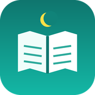

Halaqah Qur'an
Absensi guru & capaian hafalan santri
Pasang aplikasi
Buka lebih cepat dari layar utama HP.
Nanti
Pasang
Pasang di iPhone
Ketuk
Bagikan
di Safari, lalu pilih
Tambah ke Layar Utama
.
Tutup
Aktifkan notifikasi
Terima pengingat absen, setoran, dan pengumuman.
Nanti
Aktifkan
Tidak ada koneksi internet